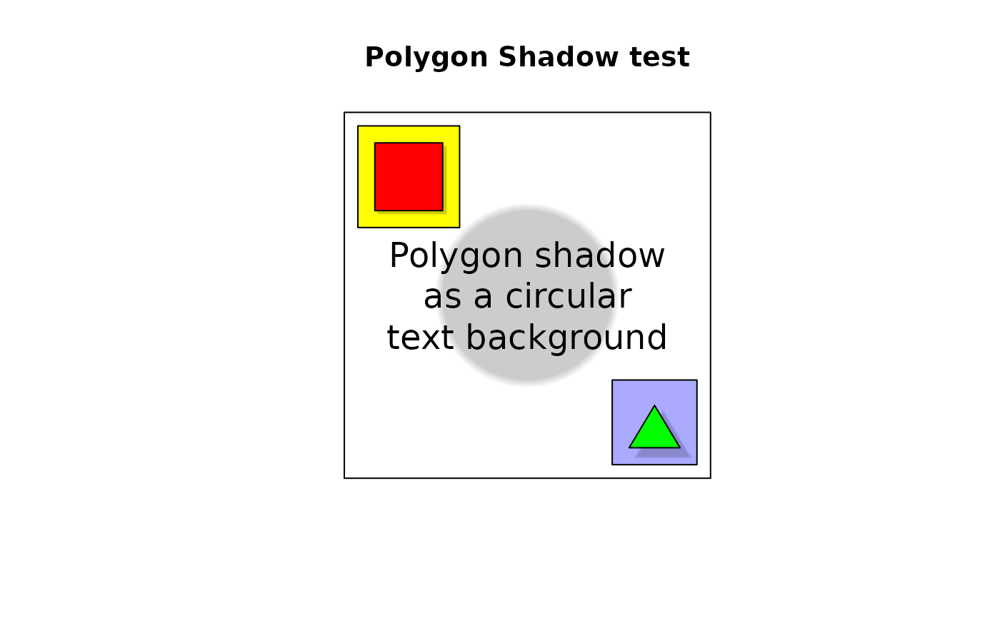

Display a shadow effect for an arbitrary polygon
polygon.shadow.RdDisplays a shadow effect on an existing plot
Usage
polygon.shadow(x,y=NULL,offset=NA,inflate=NA,col=c("#ffffff","#cccccc"))Arguments
- x,y
x and y coordinate of the vertices of the polygon. y can be missing if x is a list with x and y components.
- offset
a vector containing the values of the x and y offsets for the shadow. Defaults to 1/20 of the maximum x and y dimensions of the polygon.
- col
the colors of the shadow from the outer edge to the central part.
- inflate
the amount to "inflate" the shadow relative to the polygon (i.e. the penumbra). Defaults to the values in offset.
Details
polygon.shadow is typically called just before drawing a polygon. It displays a shadow effect by drawing the polygon ten times, beginning with the first color in col and stepping through to the second color to create a "shadow" (or a "halo" if you prefer). Each successive polygon is shrunk by 10% of inflate. The default shadow effect has the light at the upper left. This effect may also be used as a text background.
Note
The background must be a constant color or the shadow effect will not look right. A good starting point for the two colors is the color of the background and the RGB components of that color multiplied by 0.8. Use a smaller multiplier for a darker shadow.
Examples
par(pty="s")
plot(1:5,type="n",main="Polygon Shadow test",xlab="",ylab="",axes=FALSE)
box()
# do a shadow on a yellow square
polygon(c(1,2.2,2.2,1),c(5,5,3.8,3.8),col="#ffff00")
polygon.shadow(c(1.2,2,2,1.2),c(4.8,4.8,4,4),col=c("#ffff00","#cccc00"))
polygon(c(1.2,2,2,1.2),c(4.8,4.8,4,4),col=c("#ff0000"))
# a green triangle on a light blue square with a big offset
polygon(c(4,5,5,4),c(2,2,1,1),col="#aaaaff")
polygon.shadow(c(4.5,4.8,4.2),c(1.7,1.2,1.2),col=c("#aaaaff","#8888cc"),
offset=c(0.1,-0.1),inflate=c(0.2,0.2))
polygon(c(4.5,4.8,4.2),c(1.7,1.2,1.2),col=c("#00ff00"))
# now a circle as a background
polygon.shadow(cos(seq(0,2*pi,by=pi/20))+3,sin(seq(0,2*pi,by=pi/20))+3,
offset=c(0,0),inflate=c(0.1,0.1))
text(3,3,"Polygon shadow\nas a circular\ntext background",cex=1.5)
